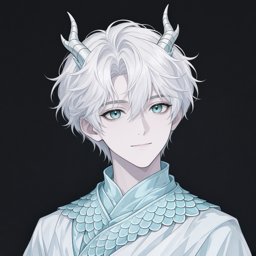

<!doctype html>
<html lang="zh-CN">
  <head>
    <meta charset="UTF-8" />
    <meta name="viewport" content="width=device-width, initial-scale=1.0" />
    <title>台伴</title>
    <link rel="preconnect" href="https://fonts.googleapis.com" />
    <link rel="preconnect" href="https://fonts.gstatic.com" crossorigin />
    <link
      href="https://fonts.googleapis.com/css2?family=Inter:wght@400;500;600&display=swap"
      rel="stylesheet"
    />
    <script>
      document.documentElement.dataset.theme = matchMedia('(prefers-color-scheme: light)').matches
        ? 'light'
        : 'dark'
    </script>
  </head>
  <body>
    <div id="stage" class="stage">
      <aside id="bubble" class="bubble" hidden>
        <div class="bubble-head">
          <span class="pet-face">
            
          </span>
          <p class="who">台伴 · 到点了</p>
        </div>
        <p id="title" class="title"></p>
        <p id="note" class="note"></p>
        <div class="actions">
          <button id="open" type="button">去处理</button>
          <button id="dismiss" class="ghost" type="button">知道了</button>
        </div>
      </aside>
      <div id="buddy" class="buddy" role="button" tabindex="0" aria-label="台伴">
        <div class="buddy-art">
          
        </div>
      </div>
    </div>
    <script type="module" src="./src/pet.ts"></script>
  </body>
</html>
